Steps in this guide
- Sign in to Microsoft Azure and pick your account
- Verify your identity — send a code to your email
- Retrieve the single-use code from your inbox
- Open the email and copy the code
- Confirm the “Stay signed in?” prompt
- Dismiss the Azure portal welcome tour
- Create a resource — start the Azure Function setup
- Choose “Function App” from the Marketplace
- Activate an Azure free trial (no subscription yet)
- Open Users to invite collaborators as contributors
- Create or invite the new user
- Choose “Invite external user”
- Fill in and send the invitation
- Review the summary and send the invite
- Confirmation — “User invitation in progress”
- Guest side — the invitation email arrives in Gmail
- Open the email and accept the invitation
- Guest accepts the requested permissions
- Guest lands on My Apps (myapplications.microsoft.com)
- Verify the guest appears in the users list
- Open Subscriptions from the portal home
- Open Azure subscription 1
- Open Access control (IAM) from the subscription Overview
- Open Access control (IAM) → Role assignments on the subscription
- Start the assignment — Add → Add role assignment
- Sign out to switch accounts
- As the Contributor: choose Function App again
- Select the hosting option — Flex Consumption
- Fill in the Basics tab
- Review the summary and click Create
- Confirmation — “Initializing deployment” of the Function App
- Deployment complete — go to the resource
- Azure DevOps sign-up — complete your profile details
- Click “Create new organization”
- Confirm the account and Continue
- Name the organization and complete the CAPTCHA
- Provisioning — “Taking you to your organization…”
- Create the first project
- Provisioning — “New project is being created…”
- Project created — open Repos
- More steps will be added as screenshots are provided…
✅ Before you start
- A Microsoft account (e.g., an Outlook/Hotmail or Gmail-registered Microsoft account) or a work/school account.
- An active Azure subscription is recommended if you plan to link Azure DevOps to Azure billing (buy parallel jobs, artifacts, etc.). You can start without one.
- A modern browser (Edge or Chrome) with internet access.
Sign in to Microsoft Azure and pick your account
Everything starts from the Azure portal, since your Azure DevOps organization will be tied to the Microsoft identity (and, optionally, the subscription) you sign in with.
- Open a browser and go to https://portal.azure.com. The Microsoft sign-in page opens.
- On the “Pick an account” screen, click the account you want to use — in this example, veeduriabg@gmail.com (highlighted in red below).
- If your account is not listed, click Use another account and enter your credentials.
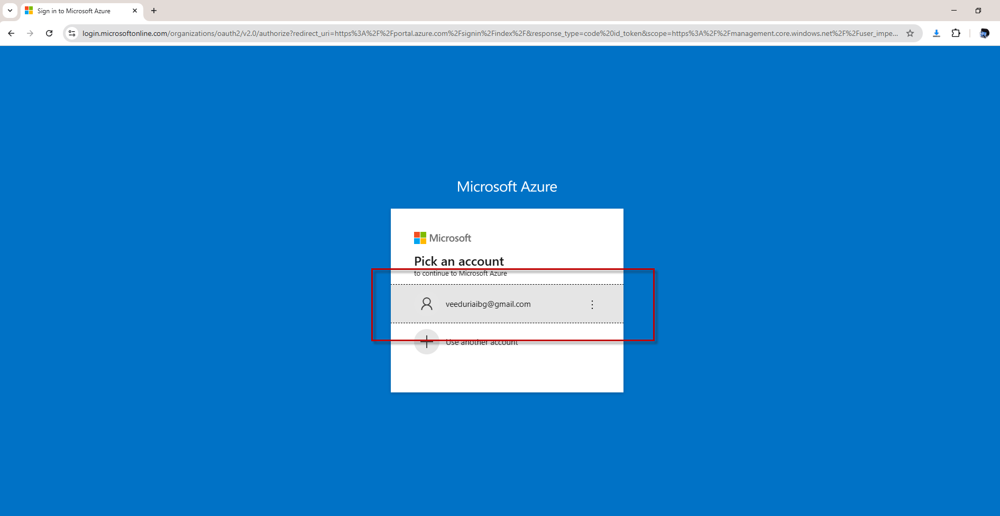
Step 1 — Pick the Microsoft account to continue to the Azure portal.
Verify your identity — send a code to your email
Because you are signing in with a personal Microsoft account (such as one registered with a Gmail address), Microsoft asks you to prove your identity with a one-time verification code instead of a classic password prompt.
- After selecting your account, the “Get a code to sign in” screen appears, confirming the email the code will be sent to — in this example, veeduriabg@gmail.com.
- Click the Send code button (highlighted in red below).
- Microsoft emails a short one-time code to that address.
- On the next screen, open your email inbox, copy the code, paste/enter it into the verification field, and continue.
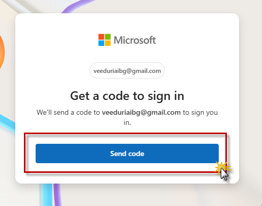
Step 2 — Click "Send code" to receive a one-time sign-in code by email.
Retrieve the single-use code from your inbox
Microsoft has emailed the verification code. Now switch to your email provider — in this example, Gmail — to fetch it. Since the sign-in used a Gmail address, the code arrives in the Gmail inbox.
- Open a new browser tab and go to https://mail.google.com, signed in with the same account you used for Azure (veeduriabg@gmail.com).
- In the inbox, locate the email from “Microsoft account team” with the subject “Your single-use code” (highlighted in red below) — it usually appears within seconds.
- Open it and copy the code shown in the body — in this example, 514944.
- Return to the Azure sign-in tab, enter the code in the verification field, and continue.
- If the email has not arrived after a minute or two, go back to the Azure tab, click resend and try again.
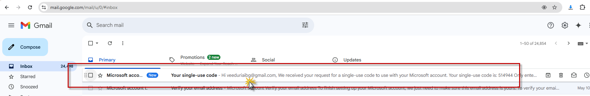
Step 3 — In Gmail, open the "Your single-use code" email from the Microsoft account team.
Open the email and copy the code
The email from the Microsoft account team (account-security-noreply@accountprotection.microsoft.com) contains the one-time code you need to finish signing in.
- Open the “Your single-use code” email.
- Find the line “Your single-use code is:” — in this example the code is 514944 (highlighted in red below).
- Copy the code and switch back to the Azure sign-in tab.
- Paste or type the code into the verification field and continue.
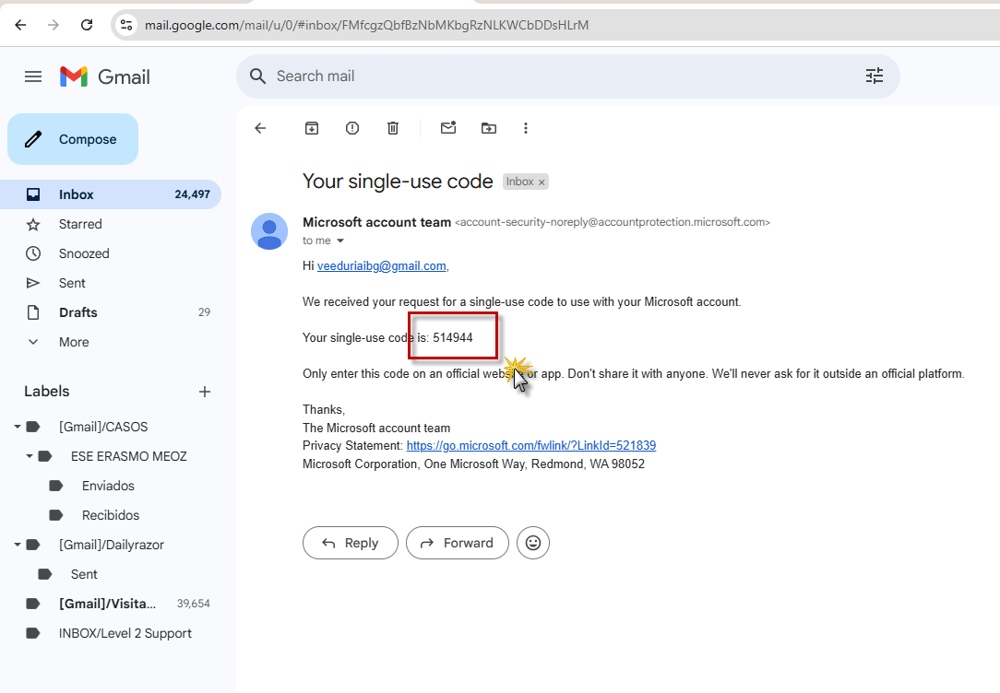
Step 4 — The email body shows the single-use code to enter on the Azure sign-in screen.
Confirm the “Stay signed in?” prompt
After the code is accepted, Microsoft asks whether to keep the session open on this device so you won't have to repeat the whole sign-in (and email verification) every time you visit the portal.
- On the “Stay signed in?” screen, click Yes (highlighted in red below) — recommended for your own development machine.
- Choose No instead if you are on a shared or public computer.
- You are then redirected to the Azure portal home dashboard.
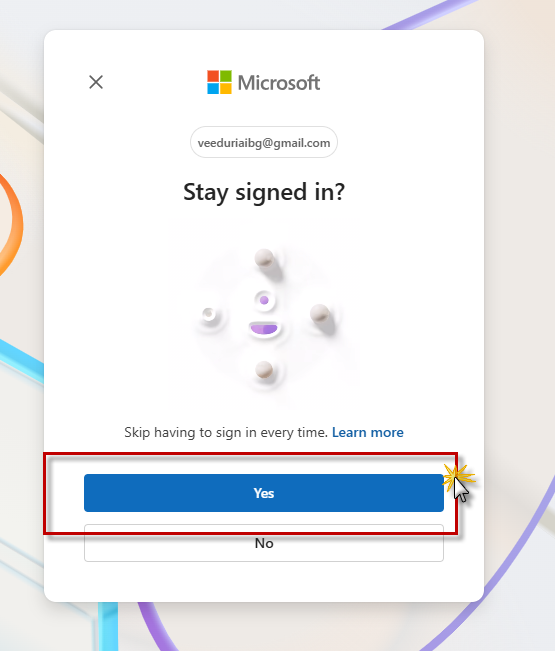
Step 5 — Click "Yes" to skip repeated sign-ins on this device.
Dismiss the Azure portal welcome tour
The first time you reach the portal, Azure offers a guided tour of the interface. You don't need it for this guide, so you can skip it and go straight to the dashboard.
- When the “Welcome to Microsoft Azure” dialog appears (“Let's show you around before you get started”), click Maybe later (highlighted in red below).
- Optionally click Start tour instead if you'd like Azure to walk you through the portal basics now — you can always reopen the tour later from the help menu.
- The dialog closes and the Azure portal home dashboard is fully visible.
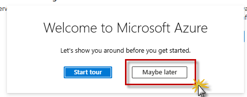
Step 6 — Click "Maybe later" to skip the guided tour and reach the dashboard.
Create a resource — start the Azure Function setup
You are now on the Azure portal home (portal.azure.com/#home). Besides configuring Azure DevOps, this guide creates an Azure Function as the cloud resource that the DevOps pipeline will build and deploy to. Everything starts from the Create a resource shortcut, which opens the Azure Marketplace.
- If you don't have a subscription yet, the home screen offers options such as “Start with an Azure free trial” ($200 credit for 30 days plus 12 months of popular free services) or “Azure for Students”.
- Under Azure services, click Create a resource — the first tile with the + icon (highlighted in red below).
- The Create a resource page (Marketplace) opens; in the next steps you will search for Function App and configure it.
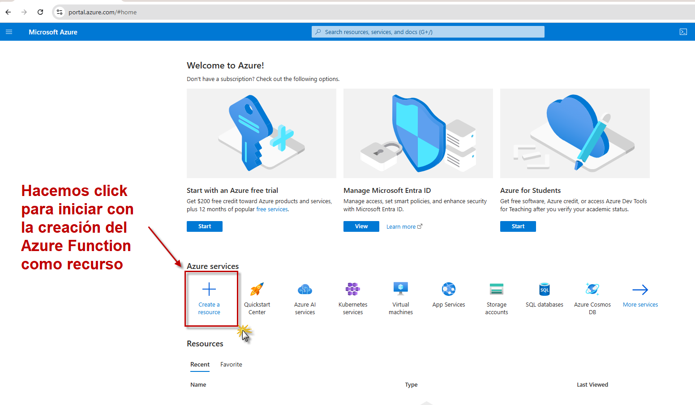
Step 7 — On the portal home, click "Create a resource" to begin creating the Azure Function.
Choose “Function App” from the Marketplace
The Create a resource page is Azure's Marketplace, with categories on the left (Compute, Databases, DevOps, Web, …) and popular services and products in the center. The service we need — a Function App — is among the most popular, so it appears right at the top.
- On the Create a resource page, locate Function App in the Popular Azure services list (highlighted in red below) — or type “Function App” into the Search services and marketplace box.
- Click Create on the Function App tile (or the tile itself).
- The Create Function App wizard opens, starting with the Basics tab that you will fill in next.
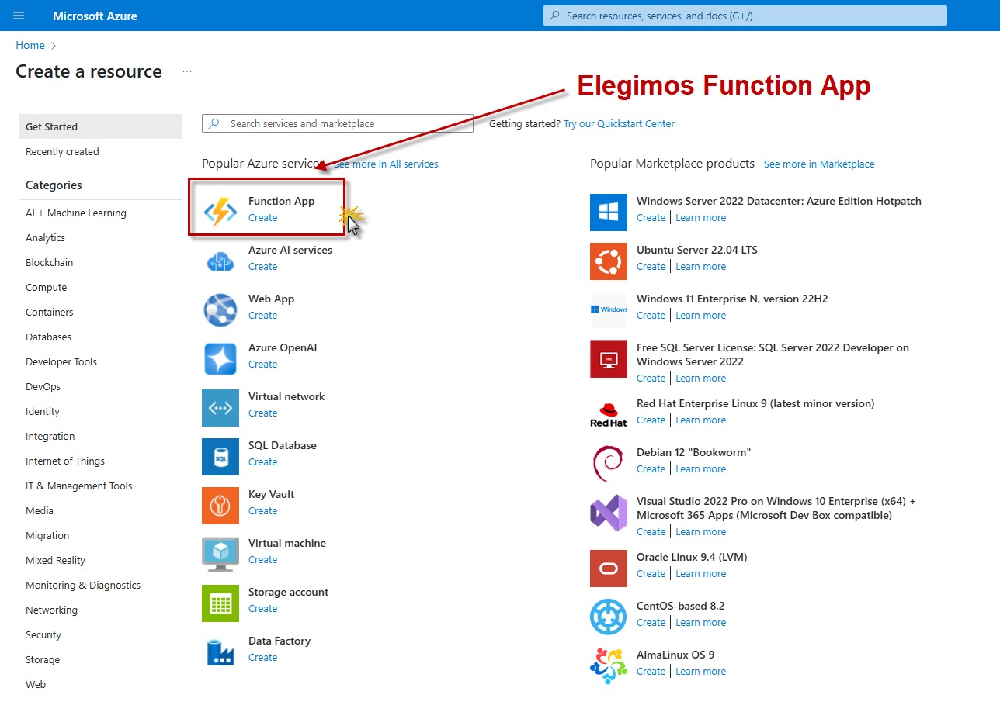
Step 8 — Pick "Function App" (the lightning-bolt icon) from the Marketplace.
Activate an Azure free trial (no subscription yet)
Every resource in Azure — including a Function App — must live inside a subscription. If your account doesn't have one yet, Azure intercepts the Create a resource flow and shows the “Welcome to Azure! Don't have a subscription?” page with sign-up options.
- On the “Welcome to Azure!” page, choose “Start with an Azure free trial” (highlighted in red below) and click Start. It includes $200 of free credit for 30 days plus 12 months of popular free services.
- Complete the free-trial sign-up form Azure presents: confirm your profile, verify your identity by phone, and add a credit card (used to validate your identity — you won't be charged unless you explicitly upgrade).
- Alternative: if you are a student, pick “Azure for Students” instead — it grants free credit without requiring a credit card.
- Once the trial is active, return to Create a resource and continue with the Function App selection from the previous step.
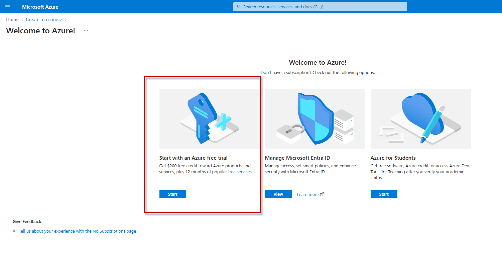
Step 9 — No subscription yet? Start the Azure free trial to unlock resource creation.
Open Users to invite collaborators as contributors
From the primary Azure account (the one that owns the subscription), the other members of the team will be invited to participate as contributors. The Users shortcut on the portal home takes you straight to user management in Microsoft Entra ID.
- On the Azure portal home, under Azure services, click the Users tile (highlighted in red below).
- The Users | All users page opens, listing every identity in your directory.
- From here you will invite the remaining team members (next step): add each user and then grant them the Contributor role so they can work on the subscription's resources — for example the Function App and its resource group.
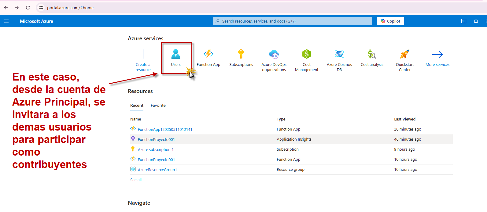
Step 10 — Click "Users" to manage directory users and start inviting contributors.
Create or invite the new user
The Users | All users page (default directory) lists every identity in your tenant. Here you add the teammates who will collaborate on the project. The list shows both Member accounts and Guest accounts added by invitation — in the example below, a guest user added via invitation and the member Manuela Cortés Granados.
- On Users | All users, click + New user (highlighted in red below).
- Pick how to add the person:
- Create new user — generates a corporate identity in your directory (id @<domain>.onmicrosoft.com with an auto-issued password).
- Invite external user — sends an email invitation; ideal for personal accounts such as Gmail-registered Microsoft accounts. The person must redeem the invitation to gain access, and appears with User type: Guest.
- Fill in the identity basics (display name and email / user principal name) and click Review + create (or Invite for guests).
- Once the user exists in the directory, grant them the Contributor role (covered in the next step).
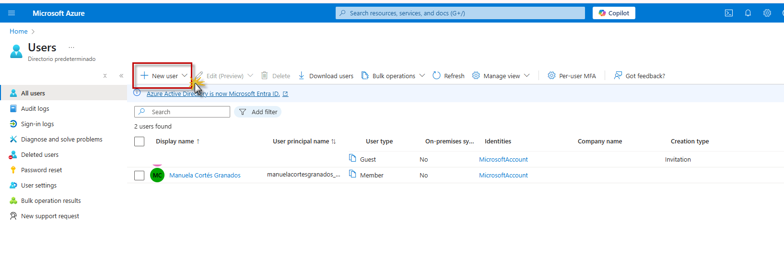
Step 11 — Click "+ New user" to add the next collaborator to the directory.
Choose “Invite external user”
The + New user button is actually a split button: clicking its arrow reveals the two ways of adding someone. Since the collaborators join with their own personal Microsoft accounts (Gmail-registered), the invitation route is the one to use.
- Open the + New user dropdown (highlighted in red below).
- Select “Invite external user” — “Invite an external user to collaborate with your organization” — rather than “Create new user”, which would mint an internal account (@<domain>.onmicrosoft.com) instead.
- The Invite external user form opens: enter the person's email address, a display name, and an optional welcome message.
- Review the assignment options shown on the form (you can add group memberships here), then click Review + invite to send the invitation.
- The guest receives an acceptance email; once they accept, they appear in the users list with User type: Guest.
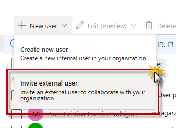
Step 12 — Select "Invite external user" so collaborators can join with their own accounts.
Fill in and send the invitation
The Invite external user wizard has four tabs — Basics, Properties, Assignments, and Review + invite. Only the Basics tab is required to get the guest into the directory.
- On the Basics tab, under Identity, enter the collaborator's email in Email — here veeduriabg@gmail.com. The Display name auto-fills from the address; adjust it to the person's real name if you prefer (both fields are highlighted in red below).
- Optionally type a short Message so the invitation doesn't feel like spam, and add a Cc recipient if someone else should get a copy. Leave Send invite message checked.
- Leave the Invite redirect URL at its default (myapplications.microsoft.com) — it's where the guest lands after accepting.
- Click Review + invite (highlighted at the bottom) to send the invitation right away. Alternatively, use Next: Properties to add job details first, or the Assignments tab to add the guest to groups or roles during the invite.
- The guest receives an email titled with your organization's invitation — they must accept it (redeem it) to become active.
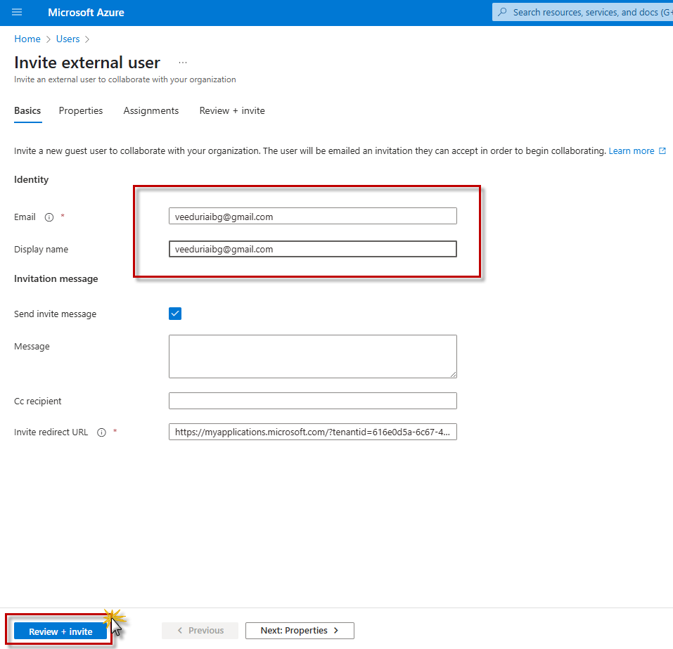
Step 13 — Enter the guest's email, keep the defaults, and click "Review + invite".
Review the summary and send the invite
The Review + invite tab condenses everything the guest will receive into one summary. Take a few seconds to verify it — once sent, the invitation email is on its way.
- Open the Review + invite tab (highlighted at the top).
- Check the summary: Email and Display name — veeduriabg@gmail.com in this example; Send invite message: Yes; the redirect URL; and under Properties, User type: Guest. The Assignments section (Groups, Roles) is empty because none were selected.
- Click Invite (highlighted at the bottom-left).
- A confirmation notification appears and the invitation email is sent. The guest must open it and accept — from that moment they show up in Users | All users as a Guest.
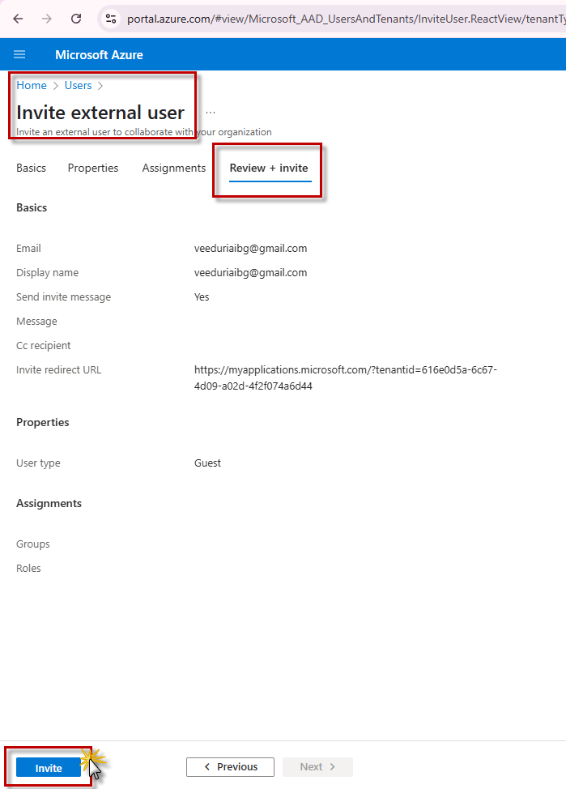
Step 14 — Verify the guest summary and click "Invite" to send the email invitation.
Confirmation — “User invitation in progress”
As soon as you click Invite, the portal reports the result in the notification panel at the top-right of the toolbar.
- Look at the top-right corner of the portal — the notification (highlighted in red below) reads “User invitation in progress for user veeduriabg@gmail.com”.
- Within a few seconds it updates to “Successfully invited user” — the invitation email has been sent and the guest account now exists in the directory.
- The collaborator can now accept the invitation from their inbox; once accepted, they appear as an active guest in Users | All users.
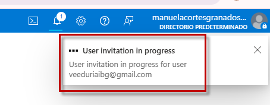
Step 15 — The portal confirms the invitation is being processed for the guest user.
Guest side — the invitation email arrives in Gmail
Now switching seats: everything so far was done by the subscription owner. From here, the steps are performed by the invited collaborator, starting in their own inbox.
- Sign in to Gmail with the invited account and look in the inbox for a message from “Microsoft Invitations” (highlighted in red below).
- The subject reads “Directorio predeterminado invited you to access applications within their organization” — the directory name your teammate entered on the invite.
- Note the security line in the preview: “Please only act on this email if you trust the organization represented below”. Verify you recognize the sender organization before doing anything else.
- Open the email and click Accept invitation — the redemption flow is covered in the next step.
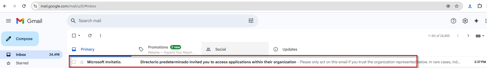
Step 16 — In the guest's Gmail, open the Microsoft Invitations email.
Open the email and accept the invitation
The invitation email contains everything needed to verify who is inviting you and where you will land after accepting — worth a quick check before clicking anything.
- Open the invitation email. Verify the sender: “Microsoft Invitations on behalf of Directorio predeterminado” (invites@microsoft.com) and the red warning banner about acting only on invitations you trust.
- Confirm the details in the body: Organization: Directorio predeterminado and Domain: manuelacortesgranadosgmail.onmicrosoft.com — your teammate's Azure directory.
- Click Accept invitation (highlighted in red below).
- The browser opens the redemption page at myapplications.microsoft.com, where you sign in with the invited Microsoft account and confirm access — covered next.
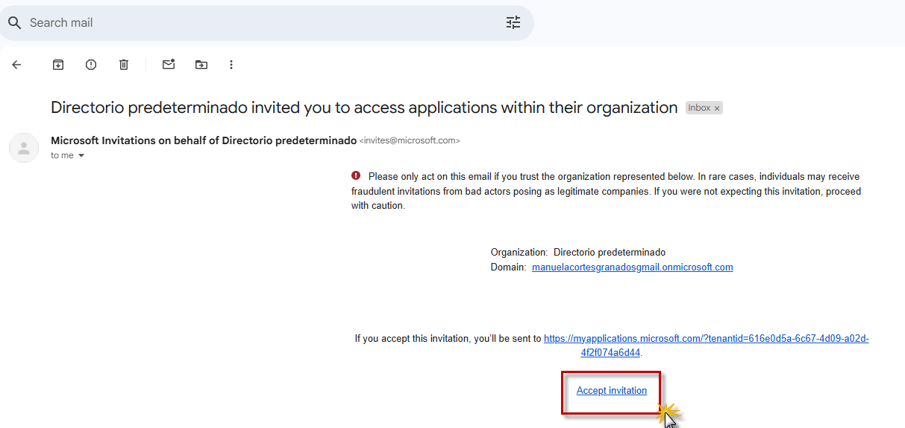
Step 17 — Verify organization and domain, then click "Accept invitation".
Guest accepts the requested permissions
After clicking Accept invitation and signing in with the invited Microsoft account, Microsoft shows the consent screen that formalizes the relationship between the guest and the organization's directory.
- Review the “Permissions requested by” screen: the organization is Directorio predeterminado (manuelacortesgranadosgmail.onmicrosoft.com).
- By accepting, you allow the organization to:
- Receive your profile data.
- Collect and log your activity.
- Use your profile data and activity data.
- Click Accept (highlighted in red below) to grant the permissions and complete the redemption. Cancel aborts the process and the guest account stays inactive.
- You are redirected to myapplications.microsoft.com (My Apps), now appearing as a guest of the organization. From the owner's side, the user now shows as an active Guest in Users | All users.
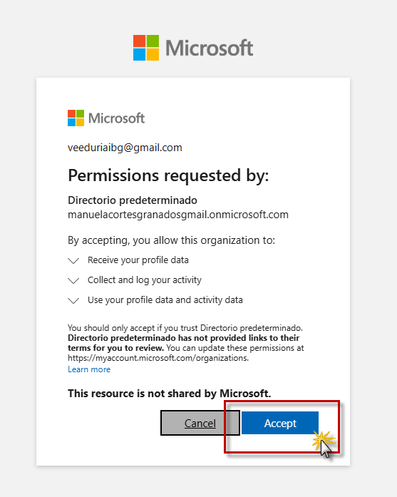
Step 18 — Review the permissions and click "Accept" to finish redeeming the invitation.
Deployment complete — go to the resource
A couple of minutes after Create, the deployment's own Overview page confirms the result with a green check: “Your deployment is complete”. This page is reachable by clicking the completion notification, or under the resource group's Deployments blade.
- Read the deployment header: name Microsoft.Web-FunctionApp-Portal-d7487089-9723, subscription Azure subscription 1, resource group AzureResourceGroup1, plus the start time and the Correlation ID (useful when opening a support ticket).
- Expand Deployment details to see every resource the template provisioned — the Function App, its hosting plan, the storage account, and Application Insights.
- Click Go to resource (highlighted in red below) under Next steps — it opens the new Function App's overview page.
- The left menu here (Inputs, Outputs, Template) stays available: the Template view shows the exact ARM JSON that was deployed, ideal for reusing as Infrastructure as Code.
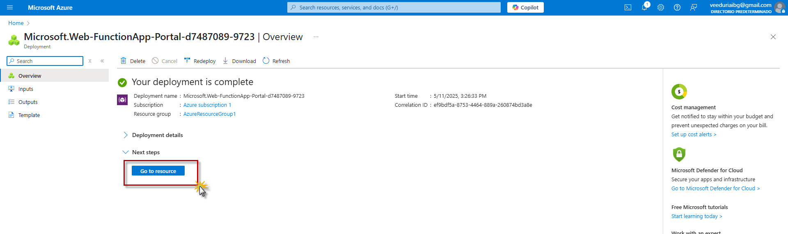
Step 32 — "Your deployment is complete" — click "Go to resource" to open the Function App.
Azure DevOps sign-up — complete your profile details
With the Azure side ready, it's time for the star of this guide: Azure DevOps. Browse to https://dev.azure.com and sign in with your Microsoft account — the very first time, DevOps asks for a few profile details before creating your organization.
- In a browser, open https://dev.azure.com and sign in with the Microsoft account (here, veeduriabg@gmail.com — note the account name in the top-right bar).
- On the “We need a few more details” screen, confirm your name — Veeduria Ciudadana Informatica y Buen Gobierno — and the contact email, both pre-filled from your Microsoft account.
- Select your country/region in the From dropdown (required).
- Optionally untick the box about receiving information, tips, and resources about Microsoft developer tools if you don't want marketing email.
- Click Continue (highlighted in red below). By continuing you accept the Terms of Service, Privacy Statement, and Code of Conduct.
- The next screen lets you create (or join) an Azure DevOps organization — covered in the following steps.
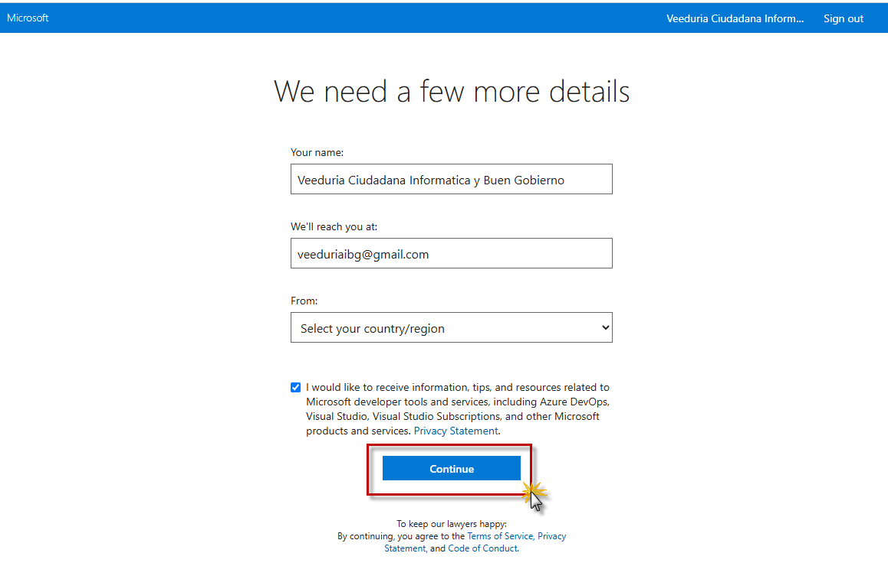
Step 33 — Fill in the DevOps profile details and click Continue.
Click “Create new organization”
With the profile completed, the Get started with Azure DevOps landing page appears. An organization is the top-level container in Azure DevOps: it groups your projects, repos, pipelines, and boards, and is billed (or made free) as a unit.
- Review the profile panel on the left — Veeduria Ciudadana Informatica y Buen Gobierno, veeduriabg@gmail.com, account type Microsoft account, country Colombia — and use Edit profile if anything needs correcting.
- Click Create new organization (highlighted in red below) on the right side.
- The creation form opens, asking for an organization name and hosting region — configured in the next step.
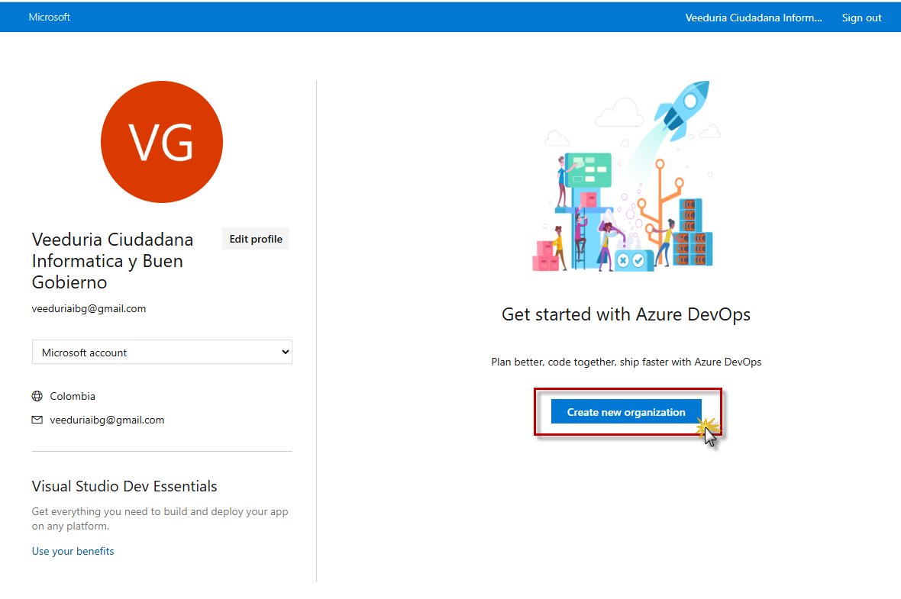
Step 34 — Click "Create new organization" to set up your DevOps organization.
Confirm the account and Continue
A compact confirmation dialog appears before the organization is actually provisioned — it binds the new organization to a specific Microsoft account and directory.
- Verify the identity shown at the top: veeduriabg@gmail.com. The new organization will be created under this account.
- Optionally click Switch directory to host the organization in a different Microsoft Entra tenant (for example, the work directory instead of the personal one) — for this guide, the default directory is fine.
- Untick the information/offers checkbox if you prefer no marketing email.
- Click Continue (highlighted in red below). This accepts the Terms of Service, Privacy Statement, and Code of Conduct, and provisions the organization with a default name — you can rename it right after.
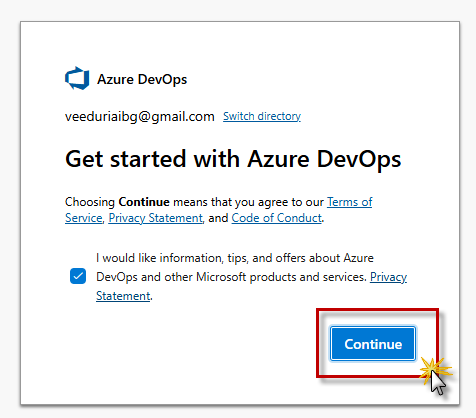
Step 35 — Confirm the identity and click Continue to provision the organization.
Name the organization and complete the CAPTCHA
The “Almost done…” screen collects the three final inputs for the organization: its name, its hosting region, and a human-verification code.
- Set Name your Azure DevOps organization — here veeduriaibg, which becomes the permanent URL dev.azure.com/veeduriaibg. Use letters, digits, and hyphens only.
- Choose where projects will be hosted in the We'll host your projects in dropdown — this example selects Europe. (Pick the region closest to your team; for Colombia, a US region is usually lower-latency.)
- Type the characters you see in the CAPTCHA image — in the example, the code 6SLRSJ has been entered.
- Click Continue (highlighted in red below). The organization is provisioned and you land in it, ready to create the first project.
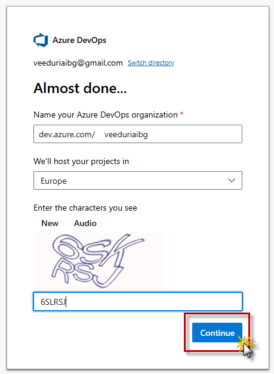
Step 36 — Organization name, hosting region, CAPTCHA… then Continue.
Provisioning — “Taking you to your organization…”
After Continue, Azure DevOps provisions the organization behind the scenes. This loading screen is the only thing between you and your brand-new DevOps home.
- Wait a few seconds — no action is required while the spinner runs and the message “Taking you to your Azure DevOps organization…” is displayed.
- The redirect ends inside your organization, at dev.azure.com/veeduriaibg, showing the “Create a project to get started” page.
- If the screen hangs for more than a minute, refresh the page — the organization is usually already created and the session simply needs to resume.
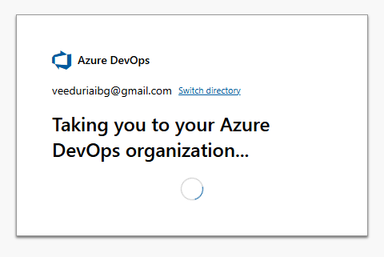
Step 37 — Brief provisioning spinner on the way into the new organization.
Create the first project
Inside the new organization, the first thing Azure DevOps asks for is a project — the container for your boards, repositories, pipelines, and test plans. This minimal form only needs a name and a visibility choice.
- Type the Project name — in this example ProyectoVeeduriaBG001 (highlighted in red below).
- Choose the Visibility: Private is selected here, so only the people you grant access to can view the project. Public is disabled for this organization — it can be turned on later via organization policies, with the caveat that some features (like TFVC) are not supported for public projects.
- The streamlined form applies DevOps defaults for everything else — Git version control and the Agile work item process — both changeable later in project settings.
- Click + Create project (highlighted in red, arrow annotation). After a few seconds the project's Summary page opens, with Boards, Repos, Pipelines, and Test Plans ready in the left menu.
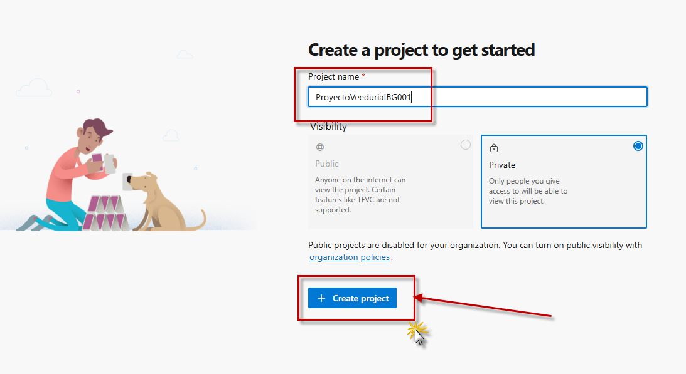
Step 38 — Name the project, keep it Private, and click "+ Create project".
Provisioning — “New project is being created…”
Right after clicking + Create project, the form grays out and a spinner appears. Behind the scenes, DevOps is scaffolding the project's default team, board, Git repository, and service connections.
- Wait a few seconds while the highlighted banner shows “New project is being created…” — the name field and visibility choice stay locked during this step.
- When provisioning finishes, the banner is replaced by the project's Summary page — the project home with its Wiki and dashboard shortcuts.
- If creation seems stuck, a page refresh usually resolves it; the project either exists or the form returns with an error explaining what to fix (most commonly, a duplicate project name).
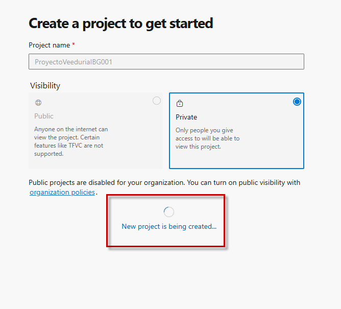
Step 39 — The brief provisioning spinner right after "+ Create project".
Project created — open Repos
Provisioning finished — the Summary page greets you with “Welcome to the project!” and shortcut buttons for every service. The breadcrumb confirms the full hierarchy: veeduriaibg / ProyectoVeeduriaBG001 / Summary.
- Take note of the left navigation — this is the hub you'll live in: Boards (work items, sprints), Repos (source control), Pipelines (CI/CD), Test Plans, and Artifacts (package feeds), plus Overview/Dashboards/Wiki above them.
- Click Repos in the left menu (highlighted in red with the arrow annotation below) — or the Repos shortcut button in the welcome panel.
- Repos opens the project's empty Git repository, offering to clone it, import existing code, or initialize it with a README — the next step of the guide.
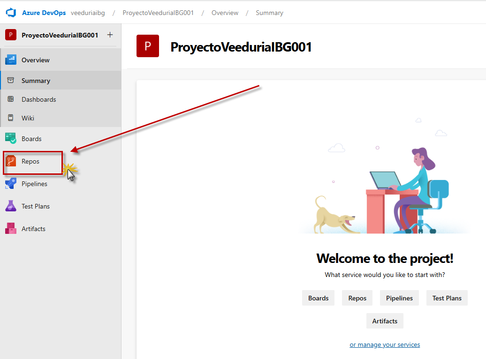
Step 40 — The project is live; open Repos to start with source control.
Guest lands on My Apps (myapplications.microsoft.com)
This is the redirect destination promised by the invitation email — the guest's proof that the redemption worked. The My Apps portal is the personal launchpad a user gets for every organization they belong to.
- After clicking Accept on the permissions screen, the browser lands on myapplications.microsoft.com — the Apps dashboard.
- “There are no apps to show” is the expected result: the guest hasn't been assigned any enterprise applications yet, and none are needed for this project.
- The important part is invisible: the invited Microsoft account is now linked to the Directorio predeterminado directory as a Guest.
- The guest can simply close this tab. The rest of the work — granting the Contributor role — happens on the owner's account, as shown from step 24 on.
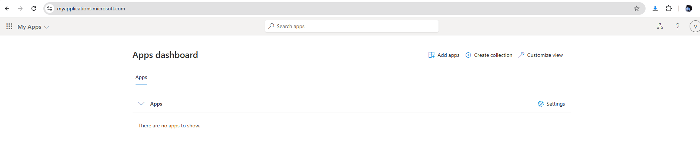
Step 19 — The empty My Apps dashboard confirms the guest redemption completed.
Verify the guest appears in the users list
Back on the owner's account (check the top-right corner: the session is signed in as manuelacortesgranados… in Directorio predeterminado), refresh the directory to confirm the invitation landed.
- Reopen Users | All users (breadcrumb highlighted at the top-left).
- The list now reports 3 users found: the member Manuela Cortés Granados, the earlier guest Aura Cristina Garzón Rodriguez, and — highlighted in red — the newly invited veeduriabg@gmail.com with User type: Guest and Creation type: Invitation.
- Seeing the guest listed means the invitation was redeemed successfully — no pending acceptance remains.
- Optionally click the user's name to open their profile (status, contact info, resend/reset actions live there).
- The directory is ready; next comes granting the Contributor role on the subscription.
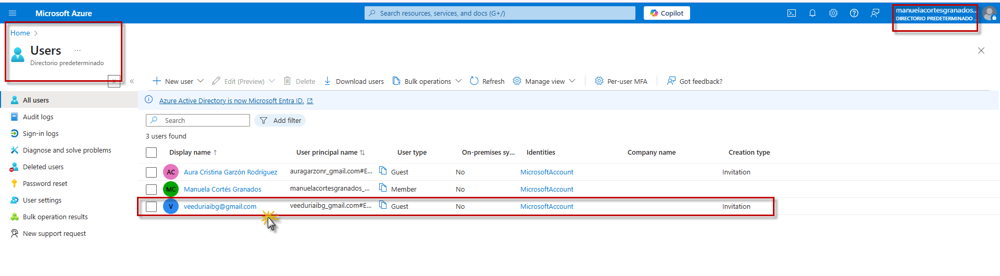
Step 20 — The invited guest now appears in Users | All users as "Guest / Invitation".
Open Subscriptions from the portal home
The Contributor role will be granted at the subscription level, so the first move is to reach your subscription. The portal home offers a direct shortcut to it.
- On the Azure portal home, under Azure services, click the Subscriptions tile — the yellow key icon (highlighted in red below).
- You can also reach it from the Resources list below, where Azure subscription 1 appears under Recent.
- The Subscriptions page opens, listing your subscription — click Azure subscription 1 to open it; the Access control (IAM) step follows.
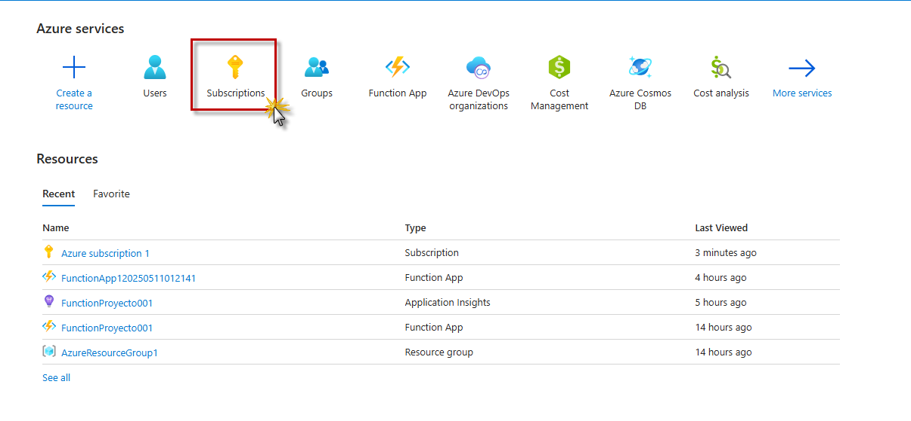
Step 21 — Click the "Subscriptions" tile to reach Azure subscription 1.
Open Azure subscription 1
The Subscriptions page lists every subscription you can manage, with its health at a glance — role, cost, and status. One click takes you inside.
- On the Subscriptions page, locate Azure subscription 1 (highlighted in red below) — the only subscription in this directory.
- Check the row's details before opening it: Status: Active, My role: Owner, Current cost: $0.00, and the subscription ID 0e9f2fce-a0ea-4f4d-9efa-f7113d99c023.
- Click the subscription name to open its Overview blade.
- The next step works from this blade's Access control (IAM) menu, where the Contributor role will be granted to the invited guest.
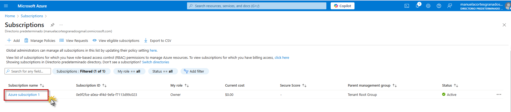
Step 22 — Open "Azure subscription 1" (Active, you are Owner) to manage its access.
Open Access control (IAM) from the subscription Overview
Inside Azure subscription 1, the Overview blade shows the essentials (ID, directory, status, your role, plan) plus cost and usage charts. The menu on the left is where access management lives.
- On the subscription's Overview blade, look at the left navigation menu.
- Click Access control (IAM) — highlighted in red with the arrow annotation below, right under Activity log.
- The IAM blade opens, defaulted to the Check access view. The Role assignments tab — covered in the next step — is where you'll see and add role assignments.
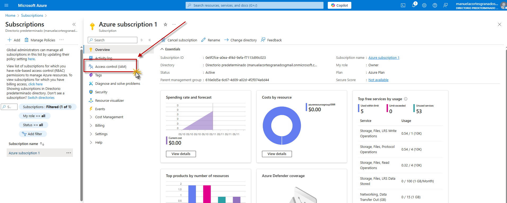
Step 23 — Click "Access control (IAM)" in the subscription's left menu.
Open Access control (IAM) → Role assignments on the subscription
With the guest active in the directory, it's time to grant them permissions over the subscription's resources. Back on the owner's account, Azure RBAC (role-based access control) is managed from the subscription's Access control (IAM) blade.
- From the portal, go to Subscriptions and open Azure subscription 1.
- In the left menu, click Access control (IAM) (highlighted in red below).
- Select the Role assignments tab (highlighted, with the arrow annotation) — this lists everyone who currently has a role on the subscription.
- To grant the Contributor role, click Add role assignment in the “Grant access to this resource” card — or the + Add button at the top of the blade. The assignment wizard is covered in the next steps.
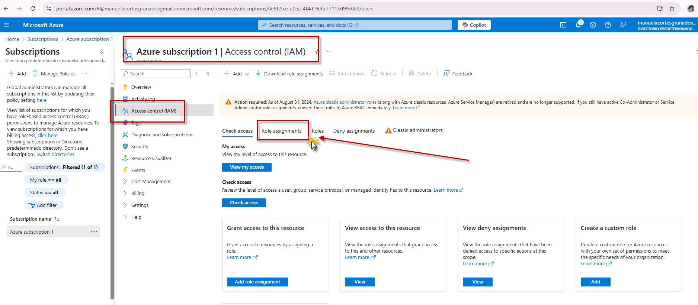
Step 24 — On the subscription, open Access control (IAM) and go to the Role assignments tab.
Start the assignment — Add → Add role assignment
On the Role assignments tab you can review who already has access — the list below shows Owner (2) and Contributor (2) entries at the This resource scope, with 5 of the 4,000 allowed assignments in use. To add a new one, the + Add button in the toolbar opens the correct entry point.
- On the Role assignments tab, open the + Add dropdown in the toolbar (highlighted in red below).
- Choose Add role assignment — the RBAC route.
- Avoid the other two options: Add co-administrator belongs to the retired classic administrator model, and Add custom role is for defining brand-new role definitions, not assigning existing ones.
- The Add role assignment wizard opens with its four tabs — Role, Members, Conditions, and Review + assign — configured in the following steps.
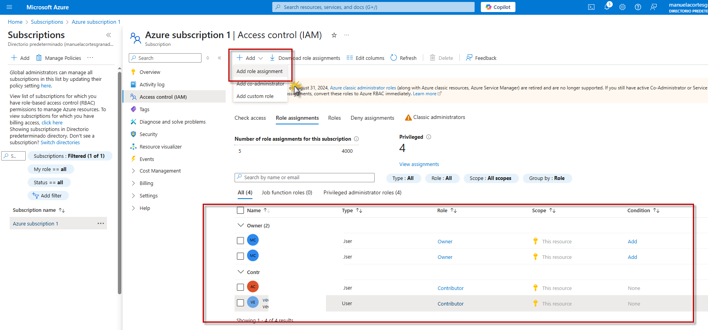
Step 25 — Toolbar "+ Add" → "Add role assignment" starts the wizard.
Sign out to switch accounts
This guide switches between two identities — the guest (veeduriabg@gmail.com) and the subscription owner (Manuela Cortés Granados). The account menu in the portal's top-right corner is how you move between them. Here, the signed-in guest signs out so the owner can continue the Add role assignment flow.
- Click your avatar / account name in the portal's top-right corner. The menu shows the current identity — veeduriabg@gmail.com under Directorio predeterminado — with View account and Switch organization links.
- Click Sign out (highlighted in red below) to end the session completely.
- To change identity without a full sign-out, use “Sign in with a different account” at the bottom of the same menu — handy when both accounts are yours.
- Sign back in as the subscription owner (Manuela Cortés Granados) and return to Access control (IAM) to continue the role assignment wizard.
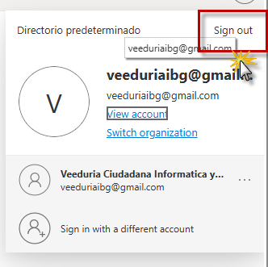
Step 26 — The account menu: "Sign out" ends the session; "Sign in with a different account" switches identity.
As the Contributor: choose Function App again
Now the collaborator's turn. With the Contributor role granted, the guest (veeduriabg@gmail.com — check the top-right corner) can create and manage resources on their own. The Marketplace flow is the same one from steps 8 and 9, but this time it succeeds under the guest's own credentials.
- Signed in as veeduriabg@gmail.com, open Create a resource from the portal home.
- In Popular Azure services, click the Function App tile (highlighted in red below) — or search for it — and then Create.
- Thanks to the Contributor assignment, the wizard will let you pick the subscription (Azure subscription 1) and complete creation — without it, the Review + create validation would fail with a “does not have permission” error.
- Fill in the wizard's tabs as before: Basics (resource group, name, runtime stack, region, plan), then Hosting, Networking, Monitoring, and finally Review + create.
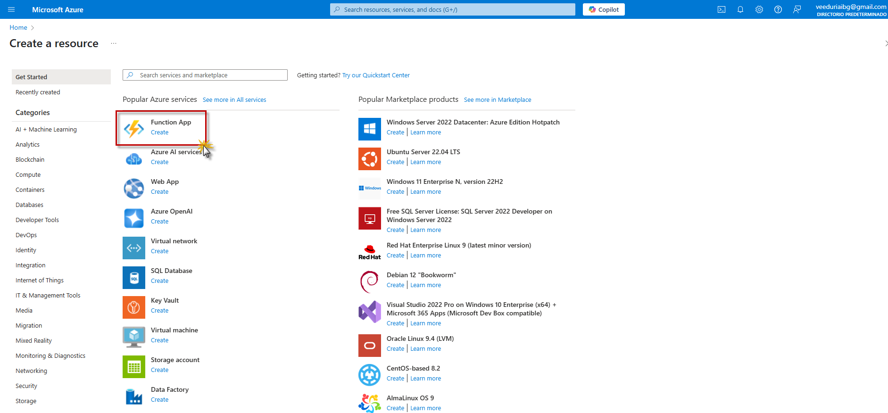
Step 27 — The collaborator (Contributor) selects Function App to create it themselves.
Select the hosting option — Flex Consumption
The Create Function App wizard starts by asking how the app will be hosted — this choice determines how it scales, what resources each instance gets, and how it is billed. The page lays the five options side by side in a comparison table.
- Review the comparison table: Scale to zero, Scale behavior, Virtual networking, Dedicated compute / cold start, and Max scale out (instances).
- Select Flex Consumption (highlighted in red below) — high scalability with compute choices, virtual networking support, pay-as-you-go billing, scale to zero, fast event-driven scaling, and up to 1,000 instances.
- The alternatives, for reference: Consumption (the classic pay-per-execution plan, up to 200 instances), Functions Premium (pre-warmed instances, no cold start), App Service (runs web and function apps on a dedicated plan), and Container Apps environment (containerized microservices with KEDA).
- Click Select (highlighted at the bottom-left) to confirm and move on to the Basics tab.
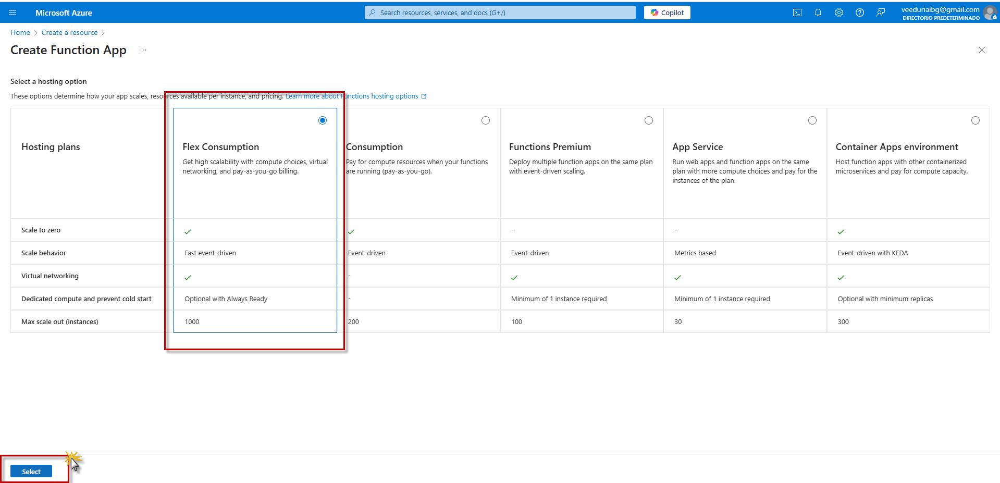
Step 28 — Pick "Flex Consumption" and click Select to continue.
Fill in the Basics tab
The Basics tab gathers the identity of the app: where it lives (subscription and resource group), what it is called, where it runs, and on what technology. The fields highlighted in red below are the ones touched in this example.
- Project Details: confirm Subscription: Azure subscription 1 and set Resource Group: AzureResourceGroup1 (or click Create new for a fresh group).
- Instance Details: set the Function App name — here FunctionAppGrupoLoyal. It must be globally unique: it becomes functionappgrupoloyal.azurewebsites.net. The green check means the name is available.
- Choose the Region: Canada Central — normally the region closest to your users.
- Pick the technology: Runtime stack: .NET with Version: 8 (LTS), isolated worker model, and Instance size: 2048 MB.
- Click Review + create (highlighted at the bottom-left) to jump straight to validation — or walk the remaining tabs (Storage, Networking, Monitoring, Deployment, Authentication, Tags) with Next if you need non-default settings.
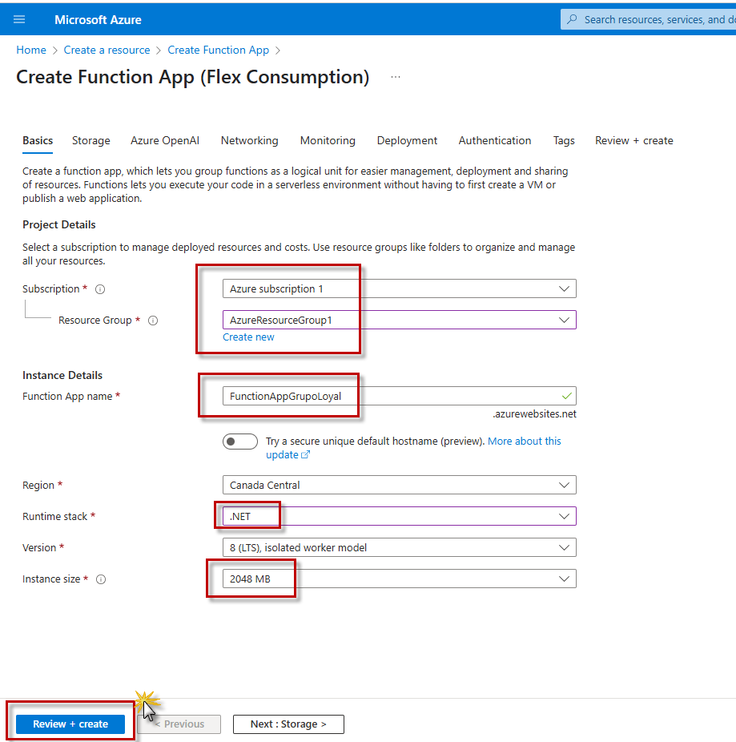
Step 29 — Basics: subscription, resource group, unique name, region, .NET 8 runtime, instance size.
Review the summary and click Create
The Review + create tab runs a final validation and condenses the whole configuration into one summary — the last chance to catch a typo before resources are actually provisioned (and before anything can bill).
- Open the Review + create tab (highlighted at the top). The blue banner about basic authentication being disabled is informational — modern deployments use Microsoft Entra credentials instead.
- Check the Details block: subscription 0e9f2fce-…, resource group AzureResourceGroup1, name FunctionAppGrupoLoyal, runtime .NET 8 (LTS), isolated worker model, instance size 2048 MB.
- Check the Hosting block — Azure will create these automatically: storage account azureresourcegroup1a3fd (required by Functions) and the Flex Consumption plan ASP-AzureResourceGroup1-9c29 (Linux, Canada Central), plus Monitoring (New) — the Application Insights resource.
- Optionally click Download a template for automation to export the equivalent ARM/Bicep template — handy for Infrastructure as Code later.
- Click Create (highlighted at the bottom-left). This fires the template deployment confirmed by the notification in the next step.
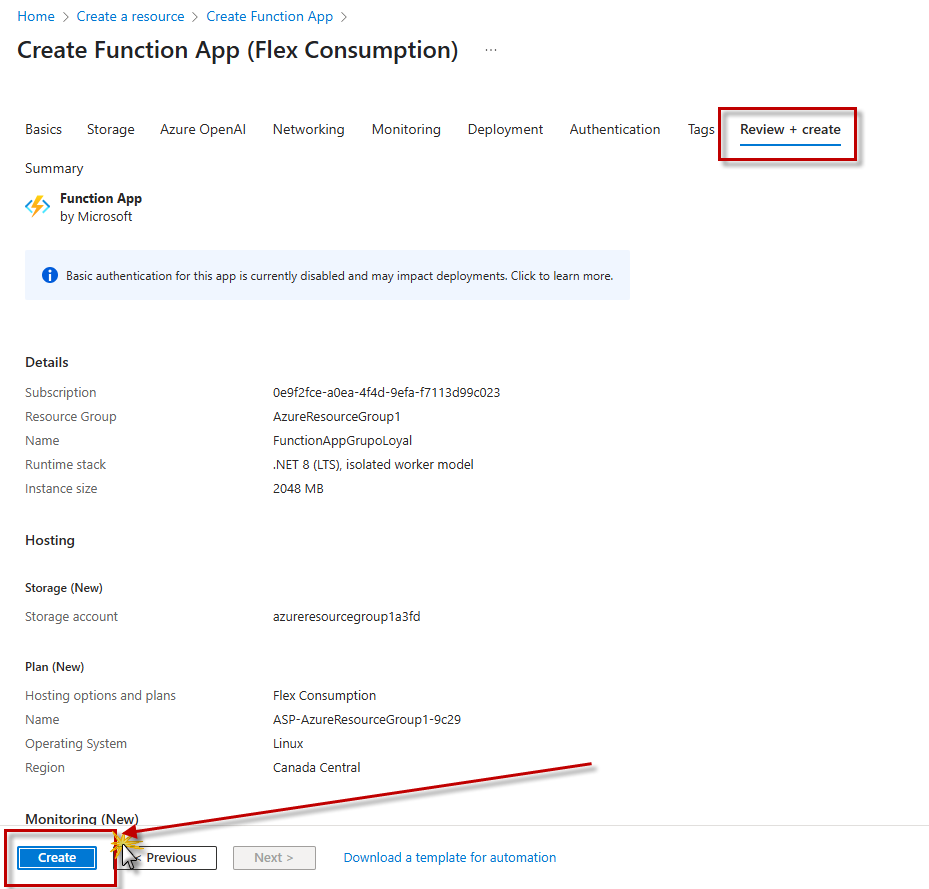
Step 30 — Validate the summary and click "Create" to provision everything.
Confirmation — “Initializing deployment” of the Function App
After the Function App wizard's final Review + create validation passes and Create is clicked, Azure submits an ARM template deployment behind the scenes — the portal reports it immediately in the notification panel.
- Look at the top-right notification (highlighted in red below): “Initializing deployment…” — Initializing template deployment to resource group ‘AzureResourceGroup1’.
- This means the Function App and its dependencies (storage account, Application Insights, hosting plan) are being rolled out as a single template deployment into AzureResourceGroup1.
- After a minute or two the notification changes to “Deployment is in progress” and finally “Your deployment is complete”, with a Go to resource shortcut.
- To follow the rollout in detail, open the resource group (AzureResourceGroup1) and check Deployments — or click the notification itself, which links to the deployment's progress page.
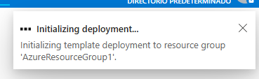
Step 31 — The template deployment to AzureResourceGroup1 has started.